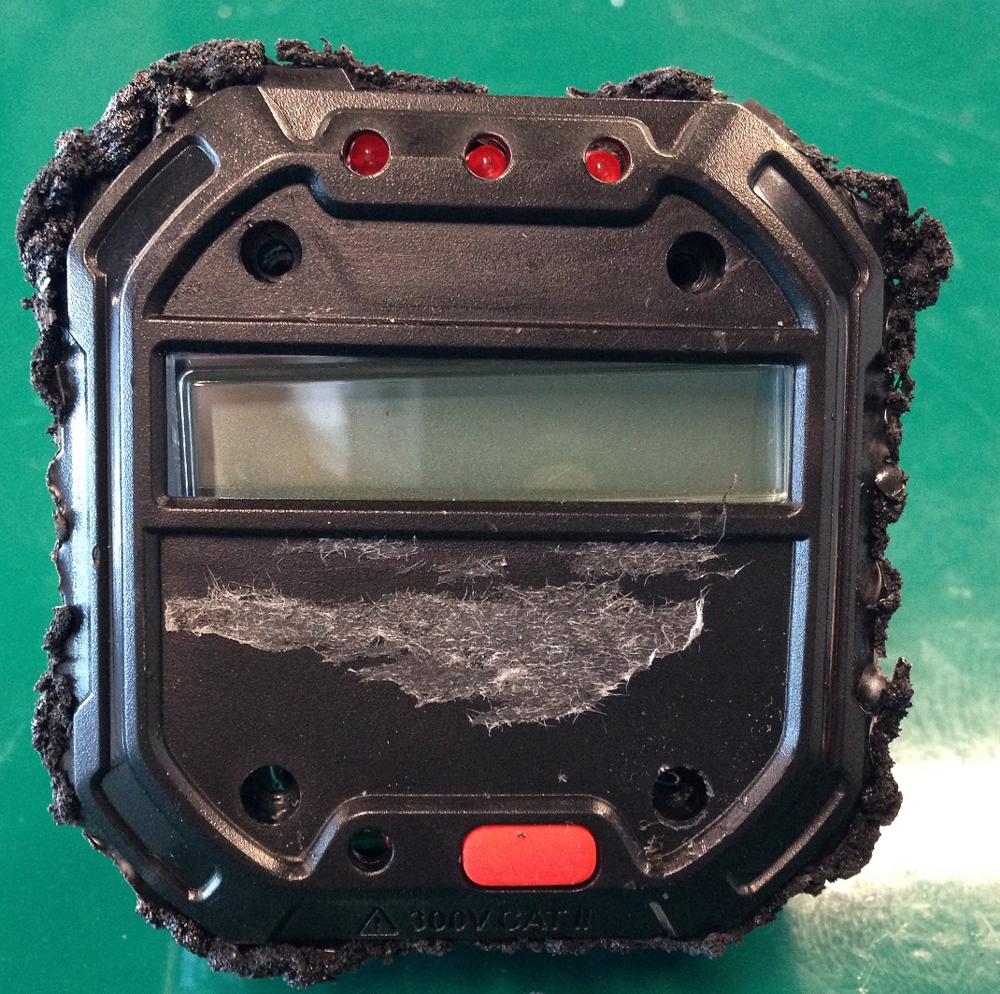
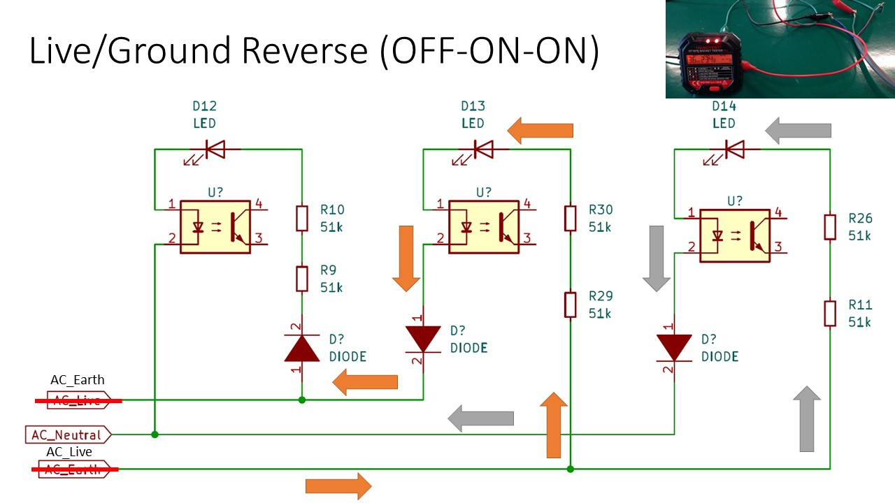
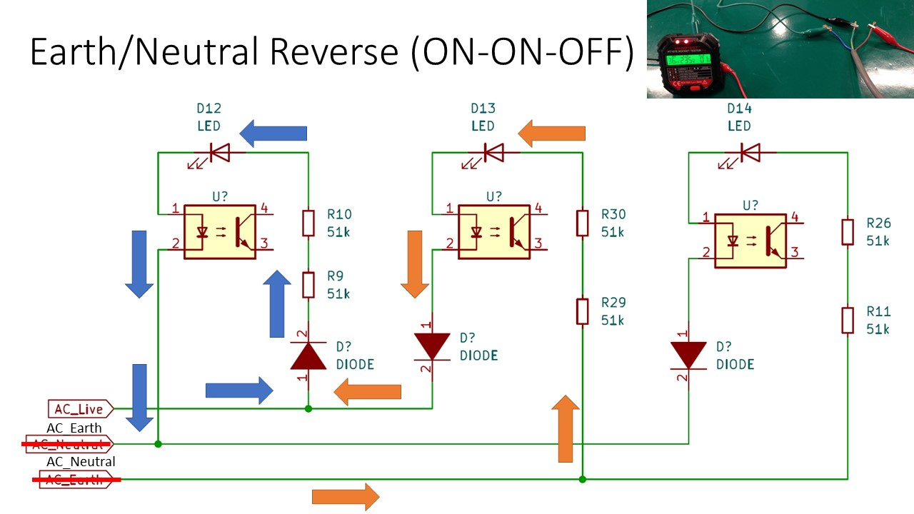

During my volunteering with Repair Kopitiam, I noticed that an experienced coach had a tool that could plug into a socket to determine if the socket was wired up correctly. Fascinated by this, I wondered what such a tool was and how does it work?
What are socket testers?
According to Wikipedia:
An electrical outlet tester, receptacle tester, or socket tester is a small device containing a 3-prong power plug and three indicator lights, used for quickly detecting some types of incorrectly-wired electrical wall outlets.
Source: https://en.wikipedia.org/wiki/Electrical_outlet_tester
Googling around, I found several brands of socket testers. One of these brands is Habotest which makes a socket tester with an integrated LCD screen which attracted my attention compared to most socket testers which only have 3 indicator LEDs.
Habotest HT107E
The model that I selected was the Habotest HT107E which has a UK plug.
Here is the HT107E connected to the AC power supply under normal operation.
Most socket testers come with 3 LEDs to indicate the correctness of the wiring of the 3 socket points. If wirings on the socket is incorrect, different combinations of the LEDs will turn on depending on the fault. In addition, HT107E has a LCD panel that displays the residual current it will use in the RCD test, live to neutral voltage and neutral to earth voltage.
HT107E Usage characterisation
There are a total of 7 supported fault states represented by different LED combinations as shown in the table below. The 8th state of Earth/Neutral Reverse is undetectable by the HT107E and is not mentioned in the user manual.
| No. | Description | Left | Mid | Right |
|---|---|---|---|---|
| 1 | Correct | ON | ON | OFF |
| 2 | Open Neutral | OFF | ON | OFF |
| 3 | Live/Ground Reverse | OFF | ON | ON |
| 4 | Live/Neutral Reverse | ON | OFF | ON |
| 5 | Live/Ground Reverse Missing Ground | ON | ON | ON |
| 6 | Open Ground | ON | OFF | OFF |
| 7 | Missing Live | OFF | OFF | OFF |
| 8 | Earth/Neutral Reverse (*Undetectable Error) | ON | ON | ON |
To characterise the behaviour of this HT107E, I set up an experiment to simulate the wiring faults in order to trigger the above states.
The 3 (Live, Neutral and Earth) wires from the AC source were exposed and connected to the HT107E inputs via crocodile clips. The positions of the crocodile clips can be switched around to simulate the wiring faults.
1. Correct (ON-ON-OFF)

The HT107E’s Live, Neutral and Earth input is represented by the Red, Black and Green crocodile clips respectively.
For the Correct state, the Red crocodile clip is connected to the brown live wire, the Black crocodile clip is connected to the blue neutral wire, while the Green crocodile clip is connected to the green-yellow earth wire.
In this state, the left and middle LEDs are on and right LED is off. The LCD backlight is green.
2. Open Neutral (OFF-ON-OFF)
To simulate the Open Neutral state, the Red crocodile clip is connected to the brown live wire, the Black crocodile clip is disconnected from the blue neutral wire, while the Green crocodile clip is still connected to the green-yellow earth wire.
In this state, only the middle LED is on. The LCD backlight is red.
3. Live/Ground Reverse (OFF-ON-ON)
To simulate the Live/Ground Reverse state, the Red crocodile clip is connected to the green-yellow earth wire, the Black crocodile clip connected to the blue neutral wire, while the Green crocodile clip is connected to the brown live wire.
In this state, the middle and right LEDs are on . The LCD backlight is red.
4. Live/Neutral Reverse (ON-OFF-ON)
To simulate the Live/Neutral Reverse state, the Red crocodile clip is connected to the blue neutral wire, the Black crocodile clip connected to the brown live wire, while the Green crocodile clip is connected to the green-yellow earth wire.
In this state, the left and right LEDs are on. The LCD backlight is red.
5. Live/Ground Reverse Missing Ground (ON-ON-ON)
To simulate the Live/Ground Reverse Missing Ground state, the Red crocodile clip is not connected, the Black crocodile clip connected to the blue neutral wire, while the Green crocodile clip is connected to the brown live wire.
In this state, all LEDS are on. It was observed that the left and middle LEDs are significantly dimmer than the right LED. The LCD backlight is red.
6. Open Ground (ON-OFF-OFF)
To simulate the Open Ground state, the Red crocodile clip is connected to the brown live wire, the Black crocodile clip connected to the blue neutral wire, while the Green crocodile clip is not connected.
In this state, only the left LED is on. The LCD backlight is red.
7. Missing Live (OFF-OFF-OFF)
To simulate the Missing Live state, the Red crocodile clip is not connected, the Black crocodile clip connected to the blue neutral wire, while the Green crocodile clip is connected to the green-yellow earth wire.
In this state, none of the LEDs are on. The LCD backlight is off.
8. Earth/Neutral Reverse (ON-ON-OFF)
To simulate the Earth/Neutral Reverse state, the Red crocodile clip is connected to the brown live wire, the Black crocodile clip is connected to the green neutral wire, the Green crocodile clip is connected to the blue neutral wire.
In this state, the left and middle LEDs are on and right LED is off. The LCD backlight is green. The LED state matches identically with the Correct state.
This means that the tester cannot be used to detect the Earth/Neutral Reverse fault. If an appliance is connected to a socket with this fault, the onsite RCCB will trip due to earth leakage.
HT107E Disassembly
After characterising the behaviour of the HT107E, I collaborated with a friend in the disassembly process.
There was no easy way identified to open up the enclosure. No visible screws were found after thorough observation of the device. Hence, we deduced that the casing may have been sealed with an ultrasonic weld and we therefore decided to use a Dremel to cut and split open the casing.
After some time of cutting along the edges of the enclosure, we realised the corners of the top cover were harder to open up compared to other edges. Hence, we suspected that there might be screws on the top cover that were covered by the sticker label. We then decided to remove the sticker label on the cover and found that there were 4 screws. It was really overkill to use the Dremel!
The screws were removed using a screwdriver and the cover of the enclosure easily came off.
After opening the enlosure, we found that the 3 socket pins are connected via 3 wires to the back of the PCB board.
The LCD screen is attached to the front of the PCB. The individual segments are driven by the evenly spaced electrical contacts.
Key Components Observed

This photo is a close-up shot of the rear of the PCB. The microcontroller is hidden behind an epoxy blob so the exact chip cannot be identified.
On-Bright OB2222
We were curious about the power supply for the microcontroller as it cannot be directly run from the AC input.
Hence, we tried to identify all the ICs on the board.
This OB2222 chip caught our attention.
Googling this part number gave us this datasheet which indicates that it is a non-isolated AC-DC 5.0V switching regulator.
This low-cost non-isolated method to generate the DC output is optimal for this application. However, we have to be mindful of the safety considerations that we cannot probe (even the DC section of) the board while the AC power is attached.
Fang Jing FL817
In the previous photo, we also identified a few FL817 optoisolators on the board connected to each of the AC pins. This is probably used by the microcontroller to determine which of the AC pins have current flowing through it.
Torex XC6206
Another power related IC XC6206 was found. Searching the datasheet online reveals that this is a DC-DC 3.0V linear regulator.
Schematics
Given the complexity of the board, it was infeasible to map out every PCB trace. So, we decided to just go for the most relevant traces associated with the 3 indicator LEDs.

We drew this Kicad schematic that contains the components in the circuit between the AC input and the LEDs.
Based on this schematic the current paths were deduced to determine why certain LEDs light up under certain conditions.
1. Correct (ON-ON-OFF)
- Left LED: Current flows from Live to Neutral when Live is in positive half cycle
- Middle LED: Current flows from Earth to Live when Live is in negative half cycle
2. Open Neutral (OFF-ON-OFF)
- Middle LED: Current flows from Earth to Live when Live is in negative half cycle
3. Live/Ground Reverse (OFF-ON-ON)
- Middle LED: Current flows from Live to Earth when Live is in positive half cycle
- Right LED: Current flows from Live to Neutral when Live is in positive half cycle
4. Live/Neutral Reverse (ON-OFF-ON)
- Left LED: Current flows from Neutral to Live when Live is in negative half cycle
- Right LED: Current flows from Earth to Live when Live is in negative half cycle
5. Live/Ground Reverse Missing Ground (ON-ON-ON)

-
Left and Middle LED: When Live is in the positive half cycle, current flows from Live though the middle LED, then goes to the left LED before returning through the Neutral. With the higher resistance across 2 LED circuits, the Left and Middle LED will be noticeably dimmer.
-
Right LED: Current flows from Live to Neutral when Live is in positive half cycle
6. Open Ground (ON-OFF-OFF)
- Left LED: Current flows from Live to Neutral when Live is in positive half cycle
7. Missing Live (OFF-OFF-OFF)
No current flow as Earth and Neutral are at the same potential.
8. Earth/Neutral Reverse (ON-ON-OFF)
- Left LED: Current flows from Live to Earth when Live is in positive half cycle
- Middle LED: Current flows from Neutral to Live when Live is in negative half cycle
Conclusion
After this teardown process, the mystery of how those 3 LEDs work based on the differing electrical faults is finally solved. The circuits for those 3 LEDs are straightforward to grasp but they certainly took some design thought as it’s quite an elegant solution for the problem.
For the rest of the circuitry associated with the display and meter readings, it’s infeasible to reverse engineer the traces in a reasonable amount of time but I can imagine those will be interesting as well.
Many thanks to Jing Ru for assisting me with this teardown effort. :)
The Kicad schematic can be found here: https://github.com/yeokm1/ht107e-socket-tester-teardown
My presentation on this topic:


{kind=link}
{kind=link}
{kind=link}
{kind=link}
{kind=link}
{kind=link}
{kind=link}
{kind=link}
{kind=link}
{kind=link}
{kind=link}
{kind=link}
{kind=link}
{kind=link}
{kind=link}
{kind=link}
{kind=link}
{kind=link}
{kind=link}
{kind=link}
{kind=link}
{kind=link}